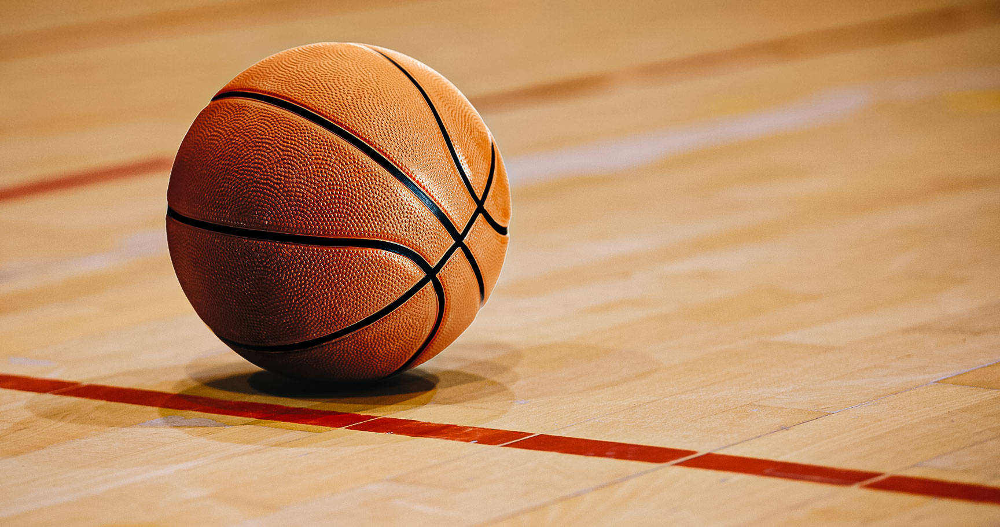
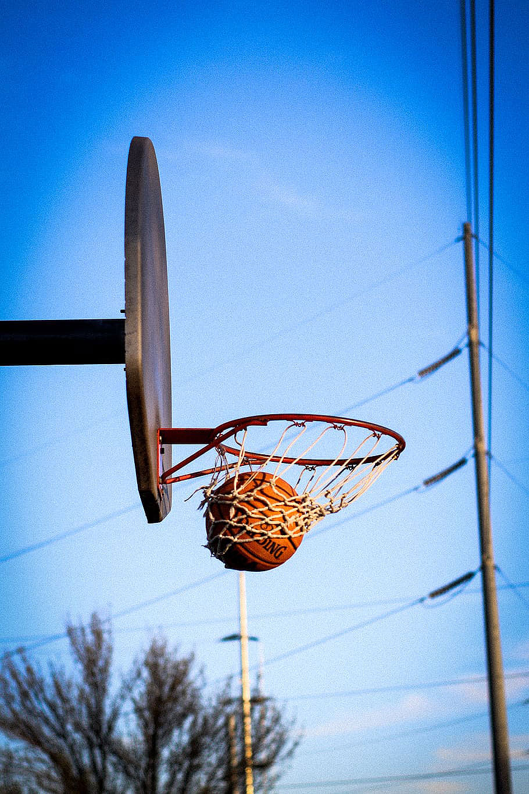

 Basketball is a team sport in which two teams, most commonly of five players each, opposing one another on a rectangular court, compete with the primary objective of shooting a basketball (approximately 9.4 inches (24 cm) in diameter) through the defender's hoop (a basket 18 inches (46 cm) in diameter mounted 10 feet (3.048 m) high to a backboard at each end of the court) while preventing the opposing team from shooting through their own hoop. A field goal is worth two points, unless made from behind the three-point line, when it is worth three. After a foul, timed play stops and the player fouled or designated to shoot a technical foul is given one, two or three one-point free throws. The team with the most points at the end of the game wins, but if regulation play expires with the score tied, an additional period of play (overtime) is mandated.
 Players advance the ball by bouncing it while walking or running (dribbling) or by passing it to a teammate, both of which require considerable skill. On offense, players may use a variety of shots—the layup, the jump shot, or a dunk; on defense, they may steal the ball from a dribbler, intercept passes, or block shots; either offense or defense may collect a rebound, that is, a missed shot that bounces from rim or backboard. It is a violation to lift or drag one's pivot foot without dribbling the ball, to carry it, or to hold the ball with both hands then resume dribbling.
The five players on each side fall into five playing positions. The tallest player is usually the center, the second-tallest and strongest is the power forward, a slightly shorter but more agile player is the small forward, and the shortest players or the best ball handlers are the shooting guard and the point guard, who implements the coach's game plan by managing the execution of offensive and defensive plays (player positioning). Informally, players may play three-on-three, two-on-two, and one-on-one.
Invented in 1891 by Canadian-American gym teacher James Naismith in Springfield, Massachusetts, United States, basketball has evolved to become one of the world's most popular and widely viewed sports.[1] The National Basketball Association (NBA) is the most significant professional basketball league in the world in terms of popularity, salaries, talent, and level of competition.[2][3] Outside North America, the top clubs from national leagues qualify to continental championships such as the EuroLeague and the Basketball Champions League Americas. The FIBA Basketball World Cup and Men's Olympic Basketball Tournament are the major international events of the sport and attract top national teams from around the world. Each continent hosts regional competitions for national teams, like EuroBasket and FIBA AmeriCup.